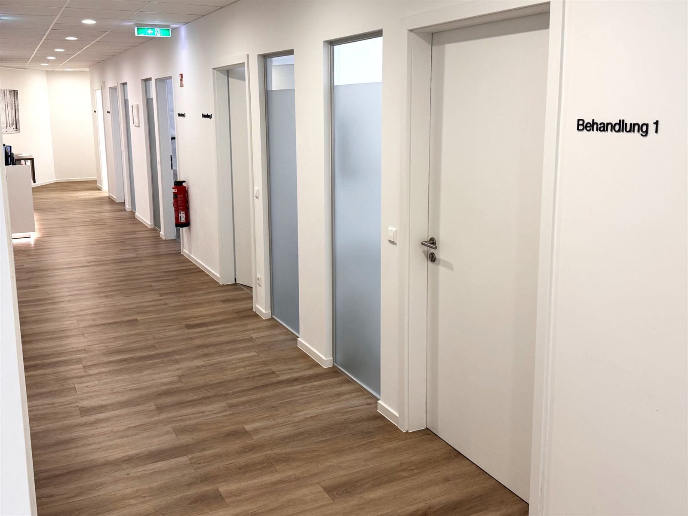

Unsere Praxen
Wir versorgen ein großes Gebiet rund um Albstadt und betreiben aktuell zwei Standorte: Albstadt-Ebingen und Albstadt-Tailfingen.
Da wir ein sehr großes Gebiet um den Raum Albstadt versorgen, betreiben wir aktuell zwei Standorte (Albstadt-Ebingen / Albstadt-Tailfingen). Diese Standorte sind untereinander vernetzt und teilen sich zum größten Teil auch das Personal – das bringt für Sie als Patientin oder Patient einige Vorteile mit sich:
- Freie Wahl der behandelnden Praxis. Sie können unter den Praxen frei wählen. Über eine Datenverbindung stehen Ihre Daten in jeder Praxis zur Verfügung.
- Freie Wahl des Arztes. Sie können sich „Ihren" Arzt für einen Sprechstundentermin aussuchen. Da alle Daten gespeichert sind, können andere Ärzte die Behandlung problemlos fortführen – etwa in Urlaubszeiten. In der Notfallsprechstunde (ohne Termin) behandelt der dafür eingeteilte Arzt.
- Auch in Urlaubszeiten geöffnet. Während andernorts Einzelpraxen schließen, bleibt bei uns so gut wie immer geöffnet – mit vertrauten Ärzten und bekannten Gesichtern. Aktuell schließen wir nur rund zwei Wochen pro Jahr.
- Breites Spektrum. Wir bieten ein breites Spektrum an Untersuchungen und Therapiemöglichkeiten. Schwierige Fälle werden im Kollegenkreis besprochen – das bringt hohe Diagnose- und Therapiesicherheit.
- Zentral & barrierefrei. Unsere Hauptpraxis am Europaplatz 3 in Ebingen liegt zentral und ist mit öffentlichen Verkehrsmitteln gut erreichbar. Vor dem Haus gibt es viele Parkplätze. Die Wege im Haus sind eben und behindertengerecht, es gibt zwei Aufzüge. Für Infektpatienten gibt es einen eigenen Warte- und Behandlungsbereich.
